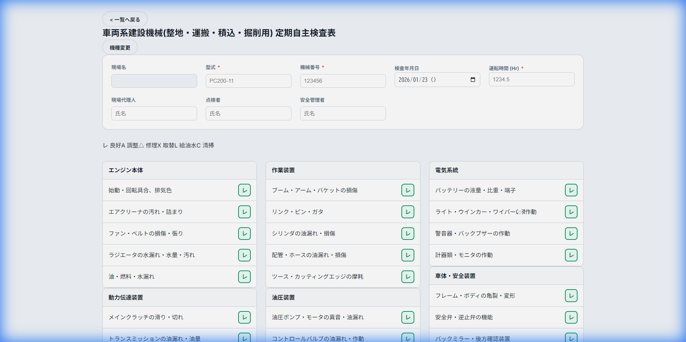

💻 PC使用者向け 操作マニュアル
管理者および事務所スタッフ向けの操作ガイドです。現場の登録や帳票の出力について解説します。
機能 1

新規現場の登録・管理
新しい現場が始まった際に、プロジェクトを登録します。
- 画面右上の「+ 新規現場作成」ボタンをクリックします。
- 現場名、工期、担当者情報（現場代理人など）を入力して保存します。
- 登録した現場は一覧に表示され、ステータス（施工中・完了）でフィルタリング可能です。
機能 2
点検表の確認と修正
現場スタッフが入力した点検データをPCで確認・修正できます。

- 現場を選択した後、確認したい機械の「編集」または「閲覧」ボタンをクリックします。
- 広い画面で一覧性高く点検項目を確認できます。
- 誤入力があった場合は、クリックして修正し再度「保存」を押してください。
💡 ヒント: 読み取り専用になっている項目（現場名など）は変更できません。
機能 3
PDF発行 / 印刷
月例報告や提出用に、点検表を印刷またはPDF化します。
- 点検表画面の最下部にある緑色の「PDF発行 / 印刷」ボタンをクリックします。
- 印刷プレビューが表示されるので、プリンターを選択して印刷するか、「PDFとして保存」を選択してください。
- ブラウザの印刷設定で「背景のグラフィック」を有効にすると、チェックマークの色などもそのまま印刷されます。